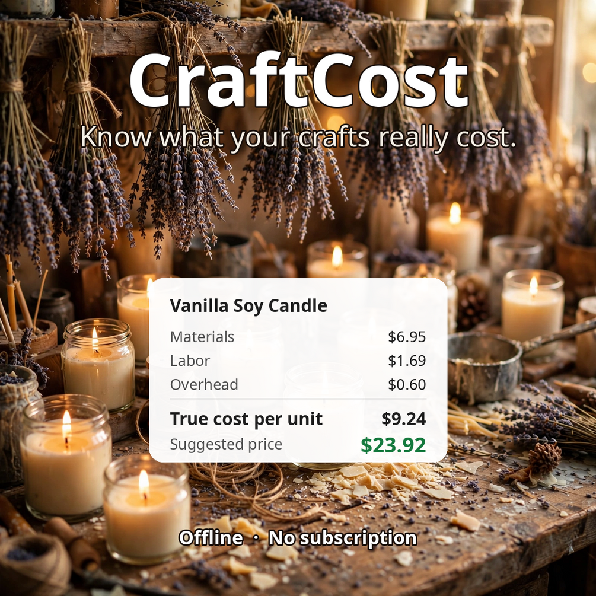

Handmade Pricing Calculator for Etsy & Craft Sellers — Supplies, Labor & Fees
Most handmade sellers underprice — not from generosity, but because the real cost was never added up. Enter your supplies, build a recipe per product, and get a suggested price for every sales channel, each with a Healthy / Thin / Underwater verdict on your current price. A built-in batch labor timer feeds your real minutes into each recipe's cost, so labor stops being a guess.
$14 one-time Get it on GumroadOne-time purchase. The tool runs offline in your browser — no account, no subscription.
Screenshots

Try the free companion tool first
Free Craft Pricing Calculator — The same true-cost formula — materials, labor, fees, margin — with the Healthy / Thin / Underwater verdict.
Free forever, runs offline in your browser. CraftCost is the full version for when you need more.
What it does
- Per-product recipes: supplies, quantities, and costs in one place
- Batch labor timer so real minutes flow into each recipe's cost
- Suggested prices for every sales channel you sell on
- Healthy / Thin / Underwater verdict on your current pricing
- Built for candles, soap, jewelry, pottery, sewn goods, baked goods, and more
- Offline single file — pricing and record-keeping only, not tax or accounting advice
Who this is for
- Etsy sellers wondering if their prices actually cover costs
- Craft fair vendors setting prices across retail and wholesale
- Makers adding a new product line and needing a sane starting price
Who this isn't for
- You need inventory management across many SKUs
- You want stock levels synced across sales channels
- You need accounting or payroll features
The honest filter: if you want a simple offline tool you pay for once and own forever, this fits. If you need cloud sync, team seats, or integrations with other platforms, you'll be happier with a subscription product — and that's fine. This tool is deliberately not that.
Frequently asked questions
- What does the Healthy / Thin / Underwater verdict mean?
- It rates your current price against your true cost: Healthy leaves real margin, Thin barely covers costs, Underwater loses money on every sale.
- How does the labor timer work?
- Time a production batch and the tool spreads those minutes across each unit's recipe cost — no more guessing your labor rate per item.
- Does it handle marketplace fees?
- Yes — fees per sales channel factor into the suggested price, so Etsy, craft fair, and wholesale prices each stand on their own.
- Is this accounting software?
- No. It's a pricing and record-keeping tool, not tax or accounting advice — but it gives your accountant much better numbers to work with.
Related free tools
Free BBQ Contest Cost Tracker
Sell at events too? Track whether a show weekend actually paid.
Open the free toolCraftybase Alternative
An honest comparison: when the one-time offline tool wins, and when the subscription alternative is the better call.
Read the comparisonGet CraftCost today
$14 one-time — one-time purchase, yours forever. No subscription.
Get it on GumroadPrefer to browse everything? More offline micro-tools from Glenerds